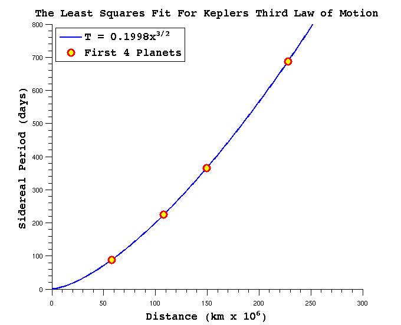
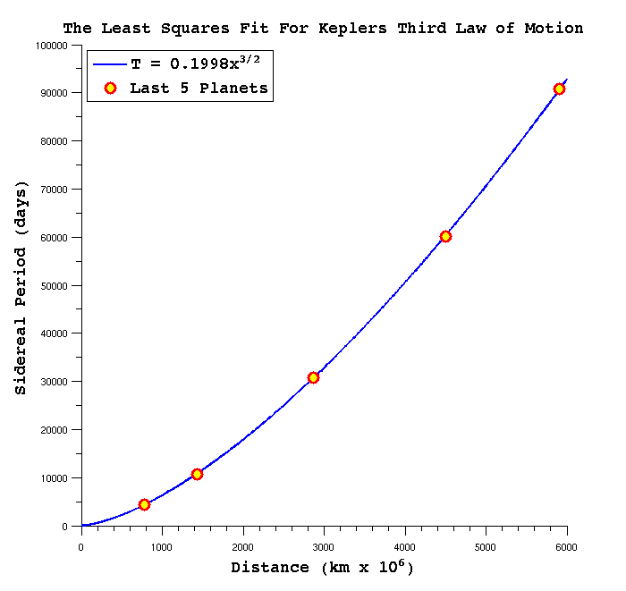

Contents
MATH 3315 Homework 5 #3 By Zack Fout
tNodes1 = [87.99 224.70 365.26 686.98];
dNodes1 = [57.59 108.11 149.57 227.84];
x1 = linspace(0, 300, 500);
y1 = orbital_fit(x1, tNodes1, dNodes1);
figure('Units', 'pixels', ...
'Position', [100 100 700 600]);
plot(x1, y1, ...
'LineStyle', '-', ...
'LineWidth', 2, ...
'Color', 'b');
ylim([0, 800]);
hold on;
plot(dNodes1, tNodes1, 'o', ...
'LineWidth', 3, ...
'MarkerSize', 10, ...
'MarkerEdgeColor', 'r', ...
'MarkerFaceColor', 'y');
hTitle1 = title('The Least Squares Fit For Keplers Third Law of Motion');
hXLabel1 = xlabel('Distance (km x 10^6)');
hYLabel1 = ylabel('Sidereal Period (days)');
hLegend1 = legend({'T = 0.1998x^{3/2}', 'First 4 Planets'}, ...
'Location', 'northwest');
set([hXLabel1, hYLabel1, hTitle1, hLegend1], ...
'FontName', 'Courier 10 Pitch', ...
'FontSize', 14, ...
'FontWeight', 'bold');
set(gca, ...
'Box', 'off', ...
'TickDir', 'out', ...
'TickLength', [.02 .02], ...
'XMinorTick', 'on', ...
'YMinorTick', 'on');
tNodes2 = [4332.4 10759.0 30684.0 60188.0 90710.0];
dNodes2 = [778.14 1427.0 2870.3 4499.9 5909.0];
x2 = linspace(0, 6000, 1000);
y2 = orbital_fit(x2, tNodes2, dNodes2);
figure('Units', 'pixels', ...
'Position', [100 100 700 800]);
plot(x2, y2, ...
'LineStyle', '-', ...
'LineWidth', 2, ...
'Color', 'b');
hold on;
plot(dNodes2, tNodes2, 'o', ...
'LineWidth', 3, ...
'MarkerSize', 10, ...
'MarkerEdgeColor', 'r', ...
'MarkerFaceColor', 'y');
hTitle2 = title('The Least Squares Fit For Keplers Third Law of Motion');
hXLabel2 = xlabel('Distance (km x 10^6)');
hYLabel2 = ylabel('Sidereal Period (days)');
hLegend2 = legend({'T = 0.1998x^{3/2}', 'Last 5 Planets'}, ...
'Location', 'northwest');
set([hXLabel2, hYLabel2, hTitle2, hLegend2], ...
'FontName', 'Courier 10 Pitch', ...
'FontSize', 14, ...
'FontWeight', 'bold');
set(gca, ...
'Box', 'off', ...
'TickDir', 'out', ...
'TickLength', [.02 .02], ...
'XMinorTick', 'on', ...
'YMinorTick', 'on', ...
'YTickLabel', num2str(transpose(get(gca, 'YTick'))));
 